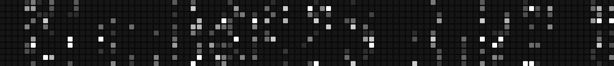

THE CHAMBER · BLACK PAPER 01
Perception Chamber

- Tokens
- 1
- Contracts
- 17
- The program
- 52,104 B
- Written in
- 834 B
- One render
- 566 KB · ~31M gas
- On chain
- 17 Sep 2026
1958 intelligence, inside a 1982 machine, persisting through a 2015 computational substrate.
Perception Chamber Canary is a one-of-one mainnet experiment in portable learned identity. A human teaches a small learner inside a Commodore 64 program. The learned state can then be saved to Ethereum, where the same learning transition is independently replayed under consensus before a new canonical brain revision is accepted.
It is the second work in the Chamber series, and the engineering sample for the collection that follows: one token deployed on its own so the whole path—deployment, teaching, saving, replay, export—could be proven on mainnet before sixty-four minds depend on it. Those sixty-four are not released. This one is a complete work, not a test that gets thrown away.
The model is deliberately simple: a single-layer perceptron with 80 inputs, 10 outputs, and 800 signed learned weights. The technical ambition is elsewhere. Perception Chamber asks whether the same learned mind can move between radically different computational environments—a 6510/C64 runtime, a reference implementation, and the EVM—without approximation, model conversion, or trust in a server.
The mainnet canary demonstrates that it can.
A small brain with a large integrity boundary
Perception Chamber uses a frozen learner called BRAIN025. Its canonical brain is an 834-byte serialized object:
- 24 bytes of header and state metadata
- 800 signed 8-bit learned weights
- 10 mood/bias bytes, required to remain zero in canonical state
There is no hidden layer. The system is a multiclass linear perceptron: 80 binary/thresholded features feed 10 action outputs. During teaching, the current prediction is compared with the human-demonstrated action. If the prediction is correct, the weights do not change. If it is wrong, active inputs move the taught action row by +1 and the predicted row by -1, saturating at signed 8-bit limits.
This is not deep learning. It is deliberately minimal: small enough to inspect completely, yet genuinely capable of learning from examples and changing future behavior.
The important point is that the brain is not merely represented by a hash. The full serialized state is preserved. Every one of the 800 weights of every saved revision can be recovered.
Learning in the C64; verification on Ethereum
Interactive learning happens inside the Commodore 64 program itself.
When TRAIN is active, the C64 program reads world/body-derived signals, converts them into the learner's 80 inputs, computes a prediction, observes the human-demonstrated action, and applies the perceptron correction when needed. Future inference immediately uses the changed weights.
The browser hosts the emulator and instrumentation; it does not secretly implement Tony's cognition.
Saving a mind crosses a second computational boundary.
A SAVE MIND transaction names the canonical parent revision, provides the ordered education stream, and includes the child-brain hash produced locally. Ethereum does not simply trust the claimed result. The contract reads the canonical parent brain, recomputes the predictions lesson by lesson, applies the same integer update rule, and derives the child brain itself.
Only if the EVM-derived 834 bytes produce the claimed canonical hash can the new revision be committed.
The standard is stronger than behavioral similarity. Two runtimes that merely behaved alike would fail it, and each canonical save is therefore also a live cross-runtime conformance test.
The resulting serialized brain must agree byte-for-byte.
Learned-state lineage
Perception Chamber does not overwrite a mutable brain. Each accepted save creates a new immutable revision:
GENESIS → REV 1 → REV 2 → REV 3 → …A revision records or points to its parent, its immutable brain blob, the immutable education that produced it, lesson and education counts, its canonical SHA-256, the block in which it was saved, and the address that committed it. Only the token's current holder can commit a revision; the address proves who saved, not who held the joystick for every lesson.
The brain bytes and education bytes are persisted as immutable Ethereum data contracts. They do not depend on a private database or API server.
If a token is saved seven times, all seven historical brains remain recoverable. Revision four has its own complete 800-weight matrix. A future tool can compare two revisions weight by weight, identify what changed, retrieve the exact education responsible for the transition, and independently replay it. This turns learning history into something closer to biography.
Learned identity can have provenance, ancestry, and a reconstructible past.
A mind above the runtime
The frozen C64 program is itself on-chain. The contract exposes the learned brain and can derive a PRG with the canonical brain inserted into the correct slot.
A saved mind can therefore be:
- read directly from Ethereum;
- inspected as raw weights;
- visualized as a mindprint;
- replayed from its education history;
- inserted into the original PRG;
- run again under another C64 emulator such as VICE.
The mainnet canary demonstrated this round trip. Its learned brain was read back from Ethereum, reconstructed into the frozen C64 program, and run again outside Ethereum with the learned behavior intact. The identity is therefore not confined to Ethereum, the browser, or one emulator.
The learned identity lives in the serialized state, not in the runtime that happens to execute it.
Art, research, and historical layering
Perception Chamber is intentionally both an artwork and a research object.
Its chronology is part of the work:
- 1958 — Frank Rosenblatt publishes the perceptron.
- 1982 — the Commodore 64 arrives.
- 2015 — Ethereum launches as a general programmable blockchain.
- 2022 — nopsta creates minimal64, a compact C64 emulator designed for new software and preserved on Ethereum.
- 2026 — Perception Chamber gives a C64-native learner a persistent, Ethereum-verifiable biography.
The project is deeply indebted to nopsta, who stored the machine on Ethereum in 2022 and has since passed away. Minimal64 made it possible to treat a C64 runtime itself as reusable on-chain infrastructure. Perception Chamber was created independently afterward, as an exploration of—and tribute to—the open computational infrastructure he left for others to use, and extends the idea one layer upward: the learned state itself becomes public, inspectable infrastructure for later tools and artworks.
The mindprint makes that state visible. It is a deterministic visual field derived from the 800 learned weights. As Tony learns, changed cells flash and settle into the standing structure of the brain. It is both instrumentation and artwork: an image whose marks are grounded in actual learned state.
Prior work and the boundary of the contribution
Perception Chamber does not claim to invent perceptrons, learning on a Commodore 64, or machine-learning models trained in Ethereum contracts.
Those histories matter.
Frank Rosenblatt (1958) provides the learning-rule lineage. His perceptron work is a foundational reference for trainable linear systems.
John Walker's BrainSim (1987) demonstrated a genuine trainable neural-network/associative-memory system on a Commodore 64, implemented in fewer than 250 lines of BASIC. BrainSim is not the same learning mechanism as BRAIN025, but it is an important precedent for machine learning on the C64.
Justin D. Harris and Bo Waggoner (2019) proposed continuously updated public machine-learning models hosted in Ethereum smart contracts. Their open-source Microsoft Research project 0xDeCA10B includes perceptron contracts and is the clear precedent for state-changing perceptron training under Ethereum consensus. It is research infrastructure rather than an artwork, and no tokens were issued.
Perceptrons (Fingerprints DAO × Generative, 2023) placed functioning neural-network models and their weights fully on Bitcoin as collectible artworks: the precedent for a learned model kept whole on a public chain as an artwork.
nopsta's minimal64 (2022) provides the portable C64 runtime substrate on which the Chamber project is built.
The contribution of Perception Chamber is therefore not “a perceptron on Ethereum” or “AI on a C64.” It is the combination:
- a portable learned-state specification;
- byte-exact implementations across heterogeneous runtimes;
- consensus replay of education;
- immutable learned-state lineage;
- and reconstruction of the learned mind back into its original executable
embodiment.
The mainnet canary
The one-of-one Perception Chamber Canary was deployed on Ethereum mainnet in September 2026:
0x6f54E1aAE0E9A679A52e5E733645cB11e0cE6127
The deployment was rehearsed against a mainnet fork and then executed against nopsta's existing emulator contracts. The contracts were source-verified. The token was transferred, taught, and saved on mainnet. Its first canonical revision contains 32 accepted lessons and a new learned brain.
That brain was independently verified, read back from Ethereum, reconstructed into the frozen C64 program, and run again outside Ethereum.
This is why canary is the right word: it is not a mock-up or a description of a future system. It is a live specimen proving the complete path.
About 580 KB: the emulator, the program and the current mind, assembled from chain state. Nothing is fetched from a server.
You can play and teach Tony here. You cannot save from this frame — a browser wallet cannot reach inside it, so teaching done here is not written to the chain. Saving happens on the token’s own page.
What is being claimed
Perception Chamber demonstrates:
- genuine online weight updates in a C64-native learner;
- a completely inspectable 800-weight model;
- deterministic cross-runtime replay;
- EVM verification of learning transitions;
- immutable preservation of brain and education history;
- public access to every canonical historical revision;
- reconstruction of a learned brain into the original executable PRG.
It does not claim modern deep-learning capability, that every C64 CPU cycle executes on Ethereum, that Ethereum proves a human physically performed every submitted lesson, or that perceptron training on Ethereum is unprecedented.
The smallness of the learner is a feature of the experiment. A brain under one kilobyte is simple enough for a person to inspect, for a C64 to train, and for Ethereum to replay directly.
The intelligence is deliberately small. The integrity boundary around it is deliberately large.
From one canary to a population of minds
The canary is the first specimen, not the endpoint.
A planned 64-token Perception Chamber collection can begin with initially equivalent BRAIN025 learners and allow each token to develop its own education, weight history, mindprint, and lineage under its holder.
That creates a population of comparable learned individuals and raises new questions: How far do identical learners diverge under different teachers? Can different educational histories converge on similar policies? Do recognizable teaching styles appear in weight histories? What happens when stewardship of a learned individual changes?
Later Chambers may introduce hidden representation, retention, memory, and more autonomous forms of agency. The intention is not to silently upgrade one work forever, but to make each new cognitive boundary legible as its own Chamber.
Conclusion
Perception Chamber begins with an old and deliberately modest learning rule, but places it inside an unusual chain of custody.
A human teaches a learner inside a Commodore 64 program. The C64 changes real weights. Ethereum independently replays the same education. A new brain is accepted only if the machines agree. The brain and education remain on-chain as immutable history. The learned brain can leave Ethereum, return to the PRG, and run again.
The experiment asks one question. The mainnet canary is an affirmative first answer to it.
Can learned identity survive the runtime?
References and prior art
- Rosenblatt, F. (1958). “The perceptron: A probabilistic model for information storage and organization in the brain.” Psychological Review, 65(6), 386–408. DOI: 10.1037/h0042519.
https://doi.org/10.1037/h0042519
- Walker, J. (1987). “Neural Network on a Commodore 64.” BrainSim / Fourmilab.
https://www.fourmilab.ch/documents/commodore/BrainSim/
- Harris, J. D., & Waggoner, B. (2019). “Decentralized & Collaborative AI on Blockchain.” arXiv:1907.07247.
https://arxiv.org/abs/1907.07247
- Harris, J. D. (2020). “Analysis of Models for Decentralized and Collaborative AI on Blockchain.” arXiv:2009.06756.
https://arxiv.org/abs/2009.06756
- Microsoft / 0xDeCA10B. “Sharing Updatable Models (SUM) on Blockchain.”
https://github.com/microsoft/0xDeCA10B
- nopsta. minimal64. 2022. GPL-2.0.
https://github.com/nopsta/minimal64
- ethereum.org. “The history of Ethereum.”
https://ethereum.org/en/history/
Project note
Perception Chamber builds on the open computational infrastructure of minimal64. The Chamber learner, lineage contracts, page, and associated tooling were developed independently by CypherDAO. Component licenses remain with their respective authors and projects: minimal64 by nopsta (GPL-2.0); the OpenROMs character ROM (LGPL-3.0-or-later, github.com/MEGA65/open-roms); the Tony demo's art and music (MIT).